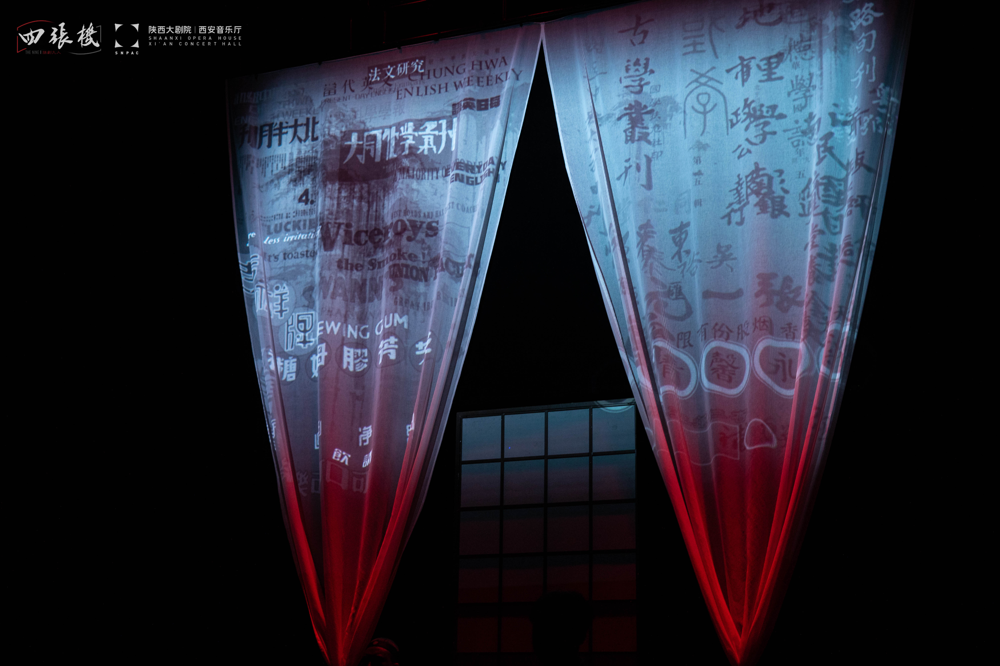

第六版
第六版

我平时更偏爱那些酷烈的创作，第一次看这么文气的剧，倒也并不排斥。这剧，文人俏语哲人智辩都写得极巧，摆设也简朴，一张桌一壶水三个人便铺陈开来立场争论，而内核需要自己触摸。它让人感觉野心广袤，谈治学所为教育公平女性权益，知识分子确实思多论多，然而这些话题的讨论要填充在时长110分钟的剧里就显得浅薄，总感觉踩不到地。然而它不算乏善可陈，剧情中我最钟意的地方是角色卢泊安的讥讽，谐音梗玩不厌，也行也好也同意的三“也”先生简直全场高光，人人共鸣，无论是政治命运还是生活日常
但戏剧归根到底是观看，注视着眼前正在发生的一切，由目之所及心生联想，平地而升的意象才是最动人的部分。作为一个学生，偏左派设定的卢泊安自然最吸引我。他和古鹤箴激辩，手敲着桌子愤愤然，我缩在一团黑暗里旁观，总觉得是内心的真相跑到了台上……中立者求三野生着一张好好先生的软面孔，给这个倒水给那个劝架，给人的感觉是“求真论”满场长脚，在他的“中间地带”四面楚歌……而最后五四运动爆发，血溅了方寸天地纸白帷幕，先生们言辞杀伐，面对学生遇险却慌了神。三个人于三个方位肃立，这是个考察立场倾向的时刻，所有人不谋而合地看向自己最信赖的那个思想符号。卢泊安站在舞台右侧，语气激烈，冲学生们大喊市民运动并不在于多数学生的参与。我盯着他，观众口不能言，演员只是演绎。在当时我想观众仿佛替代了学生的视角，观众是不能说话的，然而沉默也是一种质询。
偏颇如我，大部分时间并不在意古鹤箴在说什么，他存在的意义只是为了证明理性讨论和自由发问的重要性，每个人都要让渡出一部分愤怒的权利，来寻找构筑公共生活的可能。求三野的理论还算听得仔细，可是就如其他两个角色所说，概念支支吾吾，局限在于信仰的模糊性。何况，学者真能独立于风雨之外么？“一生所学，只为此刻”，如晦的时代里枯坐书斋，这是特权，而非道之所向。假设再多也只是思辨工具，唯有务实的世界会给出答案。
偏颇如我，大部分时间并不在意古鹤箴在说什么，他存在的意义只是为了证明理性讨论和自由发问的重要性，每个人都要让渡出一部分愤怒的权利，来寻找构筑公共生活的可能。求三野的理论还算听得仔细，可是就如其他两个角色所说，概念支支吾吾，局限在于信仰的模糊性。何况，学者真能独立于风雨之外么？“一生所学，只为此刻”，如晦的时代里枯坐书斋，这是特权，而非道之所向。假设再多也只是思辨工具，唯有务实的世界会给出答案。
这告诉我们一个道理——如果可以笃定一种信念，怀抱追问的勇气，坚持无尽的思考，有求索的精神，哪怕孤立无援，也不会到更坏的地步。
剧终时有毛笔字亮起来，观众看了都笑。百无一用是书生，往春鸟秋蝉更深处去。凌空的判语确实扎心，那个瞬间我的意志无所遁形，被吊起来审视。人人都看到它孱弱而无用，但它就在那里，即便穷途末路。“莫因诗卷愁成谶，春鸟秋虫自做声”，发问的声音，确实永远与问题的答案同等重要，即便微弱。
我想在那时的很多人，困顿于书房写几笔发声，却不能落到实处，是怯懦也是无奈。但五四运动让他们看到了希望的曙光：很多年轻人，如果有那个机会，依旧选择去做勇敢的事情。为天地立心，为生民立命，最后卢泊安站在三人中央，看向无尽的远方，正代表了五四运动后，最为年轻的力量将要撑住长夜之后的破晓。
又或者退到无路可退，至少能给大家斟一杯和平主义水。